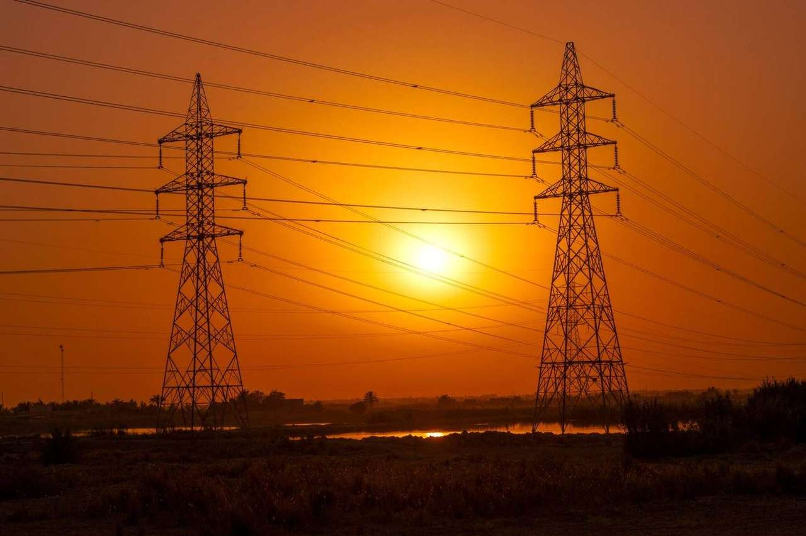
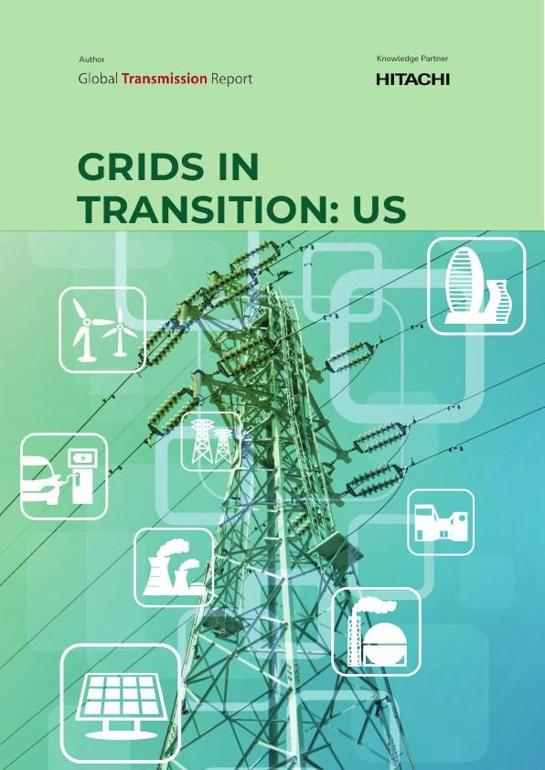

Durante diez años, el apetito eléctrico de Estados Unidos apenas se movió. Después se disparó, y a una red construida para una década tranquila se le pide ahora que soporte una mucho más ruidosa.
Piensa en la red eléctrica como en una red de carreteras en la que nunca te fijas hasta que se atasca. Durante casi toda la última década, el tráfico en Estados Unidos fue estable. Después, en dos años, todo el mundo decidió conducir a la vez.
Entre 2023 y 2025, las ventas de electricidad en Estados Unidos crecieron un 4,7%. Es más crecimiento que el de los siete años anteriores juntos. Los propios analistas del Gobierno prevén otro 14% hasta 2035. La mayor parte del nuevo tráfico procede de un tipo de edificio: el centro de datos.
En 2024, los centros de datos consumieron unos 192 teravatios hora de electricidad, casi el cinco por ciento de todo lo que consumió el país. Según la rapidez con que se extienda la inteligencia artificial, los investigadores del Lawrence Berkeley National Laboratory prevén que alcance entre 521 y 843 teravatios hora en 2030. Si se suman las fábricas que vuelven del extranjero y los coches, hogares y calefacciones que se pasan a la electricidad, el panorama está claro.
El problema es dónde aterriza. El crecimiento se concentra en unos pocos lugares, sobre todo Virginia y Texas, que ya son los rincones más congestionados de la red. Es como si una ciudad entera decidiera mudarse a un solo barrio.
Cuando las carreteras están llenas, se paga de dos formas. Primero, en dinero: desviar la energía alrededor de los cuellos de botella le costó al sistema unos 11.000 millones de dólares solo en 2023. Segundo, en desperdicio: en California y Texas se ordena desconectar parques eólicos y solares porque no hay línea para transportar lo que producen.
Y a veces se paga con un susto. En julio de 2026, una avería rutinaria en una línea de transporte del norte de Virginia trasladó en un instante unos 3,8 gigavatios de carga de centros de datos a los generadores de respaldo, y la tensión y la frecuencia de la red cercana se tambalearon. No se rompió nada. Pero quedó claro qué ocurre cuando mucha demanda crítica se concentra en un solo lugar.
La respuesta del informe no es una cosa, sino cuatro a la vez: una planificación y unos permisos más rápidos e inteligentes, tecnología que saque más partido de las líneas existentes y mantenga estable el sistema, una cadena de suministro capaz de entregar los equipos, y mercados que premien construir antes de que haga falta y no después del apagón.
Esa última parte es donde entra Hitachi Energy. Ha comprometido una inversión histórica de 1.000 millones de dólares en fabricación en Estados Unidos, está empezando a construir en Virginia la mayor planta del país de grandes transformadores de potencia, y fabrica los enlaces HVDC y los equipos de estabilización que permiten a una región absorber un gigavatio de nueva demanda sin que parpadeen las luces. Es un trabajo poco vistoso. También es el único que deshace un atasco.

El informe completo sobre las presiones que transforman la red de Estados Unidos y los cuatro factores que deciden si el suministro sigue siendo fiable, seguro y asequible.